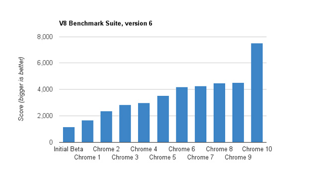
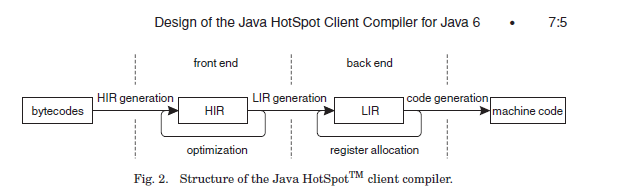

V8のJITコンパイラ、Crankshaftについて¶
こんばんは、はじめまして。nothingcosmosと申します。
JavaScript Advent Calendar 2011 (オレ標準コース) 22日目の記事です。
JavaScript初心者ですので、お手柔らかにお願いします。
Crankshaftとは¶
Crankshaftというのは、JavaScriptエンジンであるV8に ここ1年で新規追加された、JITコンパイラになります。
V8はこの新しいJITコンパイラの追加により、 V8ベンチマークで50%性能向上したようです。
私は次に読むコンパイラはmozilla系のxxx monkeyにしようと思っていたのですが、
V8 Crankshaftの50%向上へ非常に興味を持ち、 最近になってさわり始めました。
公式Blogの紹介文¶
Crankshaftに関しては、以下の公式Blogで紹介されてました。
The Chromium Blog:A New Crankshaft for V8
http://blog.chromium.org/2010/12/new-crankshaft-for-v8.html
一部引用します
Crankshaft has four main components:
1. A base compiler which is used for all code initially.
The base compiler generates code quickly without heavy optimizations.
Compilation with the base compiler is twice as fast as with the V8 compiler in Chrome 9 and generates 30% less code.
2. A runtime profiler which monitors the running system and identifies hot code,
i.e., code that we spend a significant amount of the time running.
3. An optimizing compiler which recompiles and optimizes hot code identified by the runtime profiler.
It uses static single assignment form to perform optimizations such as loop-invariant code motion,
linear-scan register allocation and inlining.
The optimization decisions are based on type information collected while running the code produced by the base compiler.
4. Deoptimization support which allows the optimizing compiler to be optimistic in the assumptions it makes when generating code.
With deoptimization support, it is possible to bail out to the code generated by the base compiler
if the assumptions in the optimized code turn out to be too optimistic.
この中で特に興味を引かれたのは、3と4です。 特殊なコンパイラ用語を簡単に説明すると、
static single assignment form(SSA形式)とは、¶
コンパイラ内部の中間表現のことです。
最近のJITコンパイラは大体がSSA形式を採用しており、 私が知っているのは、GCC、LLVM、JVM HotSpot C1/C2両方、AndroidICS、Crankshaft
SSA形式用に考案された最適化アルゴリズムを使用して、 短い時間で効率のよいコードへ変換することが期待できます。
興味のある人はwikipediaを参照。
loop-invariant-code motionとは、¶
ループ中で不変な変数をループの外に追い出すコンパイラの最適化です。
JVM HotSpot C1は行わないので、これは結構意外でした。
Linear-scan register allocationとは、¶
レジスタ割り付け用のアルゴリズムで、非常に高速に動作します。
伝統的なコンパイラは、グラフ色彩のアルゴリズムを採用していますが、 非常に時間がかかるアルゴリズムであるため、JITコンパイラではLinear-Scanが採用されることが多いです。
実装例を挙げると、LLVMとJVM HotSpot C1です。
Deoptimizationとは、¶
脱最適化と訳しますが、 JITコンパイルしたコードから、元の状態に戻す機能です。
Crankshaftは、最初にコンパイルした汎用的なコードに戻すようです。
JVM HotSpotは、JITコンパイルしたコードの途中から、インタプリタ実行に戻します。
戻すにはランタイム側の協力が必要で、JITコンパイラ特有の機能になります。
type infomation correctとは、¶
型情報をランタイムプロファイラが取得することなのだと思います。
JVM HotSpotでは、インタプリタ実行時にcast先の型や、instanceofの型や、invokevirtualした関数などを プロファイル情報として取得し、JITコンパイル時に活用します。
さらにCrankshaftは型推論するとかなんとかいう噂を効くため、プロファイル情報で型情報を取得しつつ、 型推論との組み合わせで高速なコードを生成するのだと思います。
OnStackReplacementとは、¶
上記には挙げられていませんが、 実行中のコードから別のコードへ遷移する技術のことです。
JVM HotSpotでは、ループの実行中に、 このループを内包した関数はhot codeだなと判断した場合、 実行中の関数をJITコンパイルします。
インタプリタで実行中だった場合、他関数の呼び出しを待たずに、 現在実行中の関数の途中から、JITコンパイルしたコードへ移すことができます。
CrankshaftもOSRを実装しているらしく、full-codegenで生成したコードの実行途中から、 Crankshaftで生成したコードへ移すことができるのだと思います。
興味を持った点と疑問点¶
私はコードを読む前に、課題や疑問点、興味をもった点を設定して読むのですが、 以下のような点に疑問/興味を持ちました。
(1) A base compiler(full-codegen)が生成したコード¶
どんなコードを吐くのか。JavaScript初心者なので、どんな汎用的なコードに落ちるのか興味あります。
V8は再帰関数がxxx monkeyと比較して速いという話を聞いたことがあったので、 full-codegenが関数をstab越しに呼び出す際に何らかのトリックを使っていそう。
hot codeを判断するため、runtimeと連携してprofileを取得する命令をfull-codegenは埋め込むはず。 遅延を最小にする工夫と、どんなprofile情報を取得しているのか。
(2) Crankshaftが生成したコード¶
crankshaftは最も高速なコードを生成するはずで、どんなコードを吐くのか。
deoptimizeが発生後、full-codegenへ戻るが、その後の挙動はどうなるのか。 たとえば、full-codegenは再度プロファイル情報を取得しながらCrankshaftでのJITコンパイルの機会を伺うのか、 同じ関数のCrankshaftでのJITコンパイルに上限を設けるのか。 profile情報を落としてfull-codegenでコンパイルを行い、ずっとfull-codegenで実行するのか。
inliningの仕組み。たとえば、JVMは呼び出し候補が複数ある場合、かつ第1候補が9割の確率で呼ばれる場合、 第1候補をinliningする。CrankshaftがStabコードのまま扱うのか、inliningする条件が気になる。
runtime profilerで型情報に関する情報を取得し、型推論した上でCrankshaftでJITコンパイルするはず。 aggressiveに型推論した場合の保証コード+Trapの有無と、型推論の実装はどうなっているのか。
型推論の結果をどのように適用するのか。ASTレベルなのかHIRレベルなのか。
JVM HotSpot C1の生成したコードとどっちが速いか。
(3) hot codeのコンパイルの判断¶
最初にfull-codegenで生成したコードを実行し、hot codeだと判断したら、 CrankshaftでJITコンパイルするはず。 hot codeだと判断する条件は、しきい値以上に呼び出される関数であるかどうか、 しきい値以上に実行されるループのどちらかのはず。
hot codeであると判断する上で、runtime profilerとどのように連携するのかどうか。
(4) Crankshaftの中間表現とコンパイルパイプラインのデザインに関して¶
SSA形式といっても、色々あるので、どんな中間表現なのか。
OSR/Deoptimizeの仕組み。 Tableの仕組みやSafecodeに関して。
Profile情報の、JavaScript固有の活用方法
実行手順¶
上記を課題に、以下の手順でいろいろ試していました。
1. V8のダウンロード¶
$ svn checkout http://v8.googlecode.com/svn/trunk/ v8-read-only
2. sconsのインストール¶
私はubuntuだったので、パッケージマネージャでsconsを別途インストールしました。 sconsは、makeの代替らしいです。
3. V8のビルド¶
$ scons –help でビルドオプションが見れます。
デバッグ版の場合、適当にオプションをまぜまぜしながら以下のように行いました。
$ scons mode=debug sample=shell verbose=on disassembler=on
4. サンプルコード¶
FactIF
function FactIf(n) {
var p;
if (n > 1) {
p = n * FactIf(n - 1);
} else {
p = 1;
}
return p;
}
function Bench() {
for (i=0; i<100000; i++) {
ret = FactIf(i%100);
print ('--- ' + i + ':' + ret + '---');
}
}
Bench();
5. 実行方法¶
ビルドが成功すると、shell_gというバイナリができているはずです。
$ shell_g fact_if.js
6. オプションの紹介¶
$ shell_g –help とすると、それっぽいオプションの一覧が出来てます。
適当にオプションを紹介します。
--trace_hydrogen カレントのhydornge.cfgにASTやら中間表現を出力する
--trace_codegen コンパイルログをstdoutに出力する
--print_ast コンパイル対象のjsのASTをstdoutに出力する
--print_code コンパイル後のAsmをstdoutに出力する
7. 実行例¶
$ shell_g fact_if.js –trace_codegen
例)
.
Full Compiler - *** Generate code for builtin function: 0x40215aa5 <String[11]: Instantiate> ***
Full Compiler - *** Generate code for builtin function: 0x40215abd <String[19]: InstantiateFunction> ***
Crankshaft Compiler - *** Generate code for builtin function: 0x40215aa5 <String[11]: Instantiate> ***
Full Compiler - *** Generate code for builtin function: 0x40215add <String[25]: ConfigureTemplateInstance> ***
Full Compiler - *** Generate code for builtin function: 0x4020c375 <String[13]: DefaultNumber> ***
Full Compiler - *** Generate code for builtin function: 0x402084f1 <String[7]: valueOf> ***
Full Compiler - *** Generate code for builtin function: 0x4020c0e9 <String[8]: ToObject> ***
Full Compiler - *** Generate code for builtin function: 0x4020c425 <String[11]: IsPrimitive> ***
Full Compiler - *** Generate code for builtin function: 0x402084c9 <String[8]: toString> ***
Full Compiler - *** Generate code for builtin function: 0x4020e419 <String[20]: FunctionSourceString> ***
Full Compiler - *** Generate code for user-defined function: 0x40208309 <String[0]: > ***
Full Compiler - *** Generate code for user-defined function: 0x402187fd <String[5]: Bench> ***
Full Compiler - *** Generate code for user-defined function: 0x402187d9 <String[6]: FactIf> ***
--- 0:1---
--- 1:1---
--- 2:2---
.
--- 233:8.683317618811886e+36---
--- 234:2.9523279903960412e+38---
Crankshaft Compiler - *** Generate code for user-defined function: 0x402187fd <String[5]: Bench> ***
--- 235:1.0333147966386144e+40---
--- 236:3.719933267899012e+41---
.
--- 383:3.945523969720657e+124---
--- 384:3.314240134565352e+126---
Crankshaft Compiler - *** Generate code for user-defined function: 0x402187d9 <String[6]: FactIf> ***
--- 385:2.8171041143805494e+128---
--- 386:2.4227095383672724e+130---
上記ログによると、最初に起動に必要なjsをfull-codegenでコンパイルし、
hot codeをCrankshaftでrecompileしているようです。
CrankshaftでRecompileされているメソッドは、Bench()とFactIf()です。
Bench()
ループ長が長いため、hot codeだと判定され、CrankshaftでRecompileされているのだと思います。
Bench()をRecompileした際には、ログの出力からBench()を実行中なはずです。
FactIf()のreturnからBench()のCrankshaftが生成したコードへ遷移しているか、
Crankshaftが生成したコードのループの中にsafepointを埋め込み、
full-codegenのsafepointからCrankshaftが生成したコードへ遷移しているはずです。
FactIF()
何度も呼び出されるメソッドであるため、hot codeだと判定され、CrankshaftでRecompileされているのだと思います。
何度も呼び出されるメソッドの場合、メソッドが次に呼ばれた際に、
full-codegenが生成したコードではなく、Crankshaftが生成したコードを呼び出せば良いはずです。
8. gdb debug¶
gdbでbreakできます
$ gdb shell_g
(gdb) break v8::internal::MakeCrankshaftCode(v8::internal::CompilationInfo*)
Breakpoint 1 at 0x8092328: file src/compiler.cc, line 173.
(gdb) run sample/fact_if.js
Starting program: /home/elise/language/V8/v8/shell_g sample/fact_if.js
[Thread debugging using libthread_db enabled]
[New Thread 0xb7fe2b70 (LWP 13542)]
Breakpoint 1, v8::internal::MakeCrankshaftCode (info=0xbfffe5c8) at src/compiler.cc:173
173 if (!info->AllowOptimize()) {
(gdb)
Crankshaftの内部¶
Crankshaftの入り口は、MakeCrankshaftCode()
Handle<Context> global_context(info->closure()->context()->global_context());
TypeFeedbackOracle oracle(code, global_context, info->isolate()); <-- 型推論っぽい
HGraphBuilder builder(info, &oracle);
HPhase phase(HPhase::kTotal);
HGraph* graph = builder.CreateGraph(); <-- high-level
if (graph != NULL && FLAG_build_lithium) {
Handle<Code> optimized_code = graph->Compile(info); <-- low-level
if (!optimized_code.is_null()) {
info->SetCode(optimized_code);
FinishOptimization(info->closure(), start);
return true;
}
}
Crankshaftには、high-level(HIR)な中間表現であるhydrogenと、 low-level(LIR)な中間表現であるlithiumがあります。
hydrogenはSSA形式の中間表現で、builder.CreateGraph()で機種非依存の最適化を行います。
lithiumは3つ組形式の、機種依存の中間表現で、
mips arm x86/x64向けが用意されており、それぞれのディレクトリ下で定義されています。
graph->Compile()ではhydrogenから機種依存のlithiumへ変換された後、
機種依存の最適化、レジスタ割り付け、コード生成を行います。
レジスタ割り付けなどの機種共通の処理では、
lithiumのベースクラスから継承したvirtual method経由でレジスタ割り付け等を行うはずです。
上記の構造は、JVM HotSpot Clientコンパイラと非常によく似ています。
builder.CreateGraph()¶
CreateGraph()は、JavaScriptのASTからgraphベースのhydrogenへの変換、最適化まで行います。
Hydrogenの大まかな流れ
//graph_の生成
graph_ = HGraph(info())
current_block_ = graph()->entry_block();
HBasicBlock* body_entry = CreateBasicBlock(initial_env);
current_block()->Goto(body_entry);
VisitDeclarations();
AddSimulate();
VisitStatements();
graph()->OrderBlocks();
graph()->AssignDominators();
graph()->PropagateDeoptimizingMark();
graph()->EliminateRedundantPhis();
graph()->EliminateUnreachablePhis();
graph()->CollectPhis();
HInferRepresentation rep(graph());
rep.Analyze()
graph()->MarkDeoptimizeOnUndefined();
graph()->InsertRepresentationChanges();
graph()->InitializeInferredTypes();
graph()->Canonicalize();
HGlobalValueNumberer gvn() <-- GVN
gvn.Analyze()
LoopInvariantCodeMotion() <-- LICM
AnalyzeBlock()
HRangeAnalysis rangeAnalysis(graph());
rangeAnalysis.Analyze();
graph()->ComputeMinusZeroChecks();
HStackCheckLiminator sce(graph());
sce.Process();
graph()->ReplacedCheckedValues();
HGraph::Compile()¶
Compile()は、hydrogenからlithiumへの変換、機種依存の最適化およびコード生成まで行う
lithiumの大まかな流れ
LAllocator allocator();
LChunkBuilder builder(info, this, &allocator);
LChunk* chunk = builder.Build();
allocator.Allocate(chunk);
MacroAssembler assembler(info ...);
LCodeGen generator(chunk, &assembler, info);
generator.Generatecode();
CodeGenerator::MarkCodePrologu(info);
code = CodeGenerator::MarkCodeEpilogue(&assembler, flags, info);
generator.FinishCode(code)
CodeGenerator::PrintCode(code, info);
AST Image¶
FactIf AST
*** Generate code for user-defined function: 0x53717ff5 <String[6]: FactIf> ***
--- AST ---
FUNC
. NAME "FactIf"
. INFERRED NAME ""
. PARAMS
. . VAR (mode = VAR) "n"
. DECLS
. . VAR (mode = VAR) "p"
. BLOCK INIT
. IF
. . GT
. . . VAR PROXY parameter[0] (mode = VAR) "n"
. . . LITERAL 1
. THEN
. . BLOCK
. . . ASSIGN
. . . . VAR PROXY local[0] (mode = VAR) "p"
. . . . MUL
. . . . . VAR PROXY parameter[0] (mode = VAR) "n"
. . . . . CALL
. . . . . . VAR PROXY (mode = DYNAMIC_GLOBAL) "FactIf"
. . . . . . SUB
. . . . . . . VAR PROXY parameter[0] (mode = VAR) "n"
. . . . . . . LITERAL 1
. ELSE
. . BLOCK
. . . ASSIGN
. . . . VAR PROXY local[0] (mode = VAR) "p"
. . . . LITERAL 1
. RETURN
. . VAR PROXY local[0] (mode = VAR) "p"
hydrogen image¶
FactIf hydrogen
begin_compilation
name "FactIf"
method "FactIf"
date 1324387693000
end_compilation
![digraph factIf {
B0 [shape=box, label="B0:\l 0 0 v0 BlockEntry <|@ \l 0 1 t1 Constant 0x32e08091 <undefined> <|@ \l 0 1 t2 Parameter 0 <|@ \l 0 4 t3 Parameter 1 <|@ \l 0 5 t4 Context <|@ \l 0 0 v5 Simulate id=2 var[0] = t2, var[1] = t3, var[2] = t4, var[3] = t1 <|@ \l 0 0 v6 Goto B1 <|@ \l "];
B0 -> B1;
B1 [shape=box, label="B1:\l 0 0 v7 BlockEntry <|@ \l 0 0 v8 Simulate id=3 <|@ \l 0 0 v9 StackCheck <|@ \l 0 2 i42 Change t3 t to i range[-2147483648,2147483647,m0=0] <|@ \l 0 2 i43 Constant 1 range[1,1,m0=0] <|@ \l 0 0 v11 CompareIDAndBranch GT i42 i43 goto (B4, B2) <|@ \l "];
B1 -> B4;
B1 -> B2;
B2 [shape=box, label="B2:\l 0 0 v15 BlockEntry <|@ \l 0 0 v16 Simulate id=47 <|@ \l 0 0 v17 Goto B3 <|@ \l "];
B2 -> B3;
B3 [shape=box, label="B3:\l 0 0 v30 BlockEntry <|@ \l 0 2 t31 Constant 1 range[1,1,m0=0] type[smi] <|@ \l 0 0 v34 Simulate id=45 var[3] = t31 <|@ \l 0 0 v35 Goto B6 <|@ \l "];
B3 -> B6;
B4 [shape=box, label="B4:\l 0 0 v12 BlockEntry <|@ \l 0 0 v13 Simulate id=46 <|@ \l 0 0 v14 Goto B5 <|@ \l "];
B4 -> B5;
B5 [shape=box, label="B5:\l 0 0 v18 BlockEntry <|@ \l 0 1 t19 GlobalObject t4 <|@ \l 0 1 i21 Sub i42 i43 range[1,2147483646,m0=0] <|@ \l 0 1 t22 LoadGlobalCell [0x471090d1] <|@ \l 0 0 t23 CheckFunction t22 0x32e41645 <|@ \l 0 1 t24 GlobalReceiver t19 <|@ \l 0 0 t25 PushArgument t24 <|@ \l 0 1 t45 Change i21 i to t range[1,2147483646,m0=0] type[number] <|@ \l 0 0 t26 PushArgument t45 <|@ \l 0 2 t27 CallKnownGlobal o #2 changes[*] <|@ \l 0 0 v28 Simulate id=28 push t3, push t27 <|@ \l 0 1 d40 Change t3 t to d <|@ \l 0 1 d46 Change t27 t to d <|@ \l 0 2 d29 Mul d40 d46 ! <|@ \l 0 0 v32 Simulate id=45 pop 2 / var[3] = d29 <|@ \l 0 1 t47 Change d29 d to t type[heap-number] <|@ \l 0 0 v33 Goto B6 <|@ \l "];
B5 -> B6;
B6 [shape=box, label="B6:\l 0 0 v37 BlockEntry <|@ \l 0 0 v38 Return t36 <|@ \l "];
B6_locals [shape=box, label="B6_locals \l predecessors "B5" "B3" \l 3 t36 [ t47 t31 uses1_0i_0d_1t_live] "];
B6_locals -> B6;
}](../images/graphviz-f45d3cbaa6dd6c6a3d754e2c09d9b90d5a636706.png)
PHIの存在¶
B6_localsがPHIを表現していて、
B5から来た場合は、t36はt47と等しく、B3から来た場合は、t36はt31と等しい。
t36は、B6でReturn t36される。 つまりt36はvar pを指す。
PHIがBlock中のIRとして表現されていない点、
またHydrogenがgraph baseということらしいので、
JVM HotSpot C1 のHIRより、JVM HotSpot C2 のIdeal IRに近いのかもしれません。
lithium image¶
FactIf lithium:
begin_compilation
name "FactIf"
method "FactIf"
date 1324387693000
end_compilation
![digraph factIf {
B0 [shape=box, label="B0:\l 0 label () () () () <|@ \l 2 gap () () () () <|@ \l 4 parameter [stack:-2]= <|@ \l 6 gap () ([stack:-2];) () () <|@ \l 8 parameter [stack:-1]= <|@ \l 10 gap () ([stack:-1];) () () <|@ \l 12 context [eax|R]= <|@ \l 14 gap ([stack:0] = [eax|R];) () () () <|@ \l 16 gap () () () () <|@ \l 18 goto B1 <|@ \l "];
B0 -> B1;
B1 [shape=box, label="B1:\l 20 label () () () () <|@ \l 22 gap () ([esi|R] = [eax|R];) () () <|@ \l 24 stack-check = [esi|R] [id=3|[parameters=2|[arguments_stack_height=0|[stack:-2];[stack:-1];[constant:1]] {[esi|R];[stack:0];[eax|R]} @-1 <|@ \l 26 gap () ([eax|R] = [stack:-1];) () () <|@ \l 28 tagged-to-i [eax|R]= [eax|R] [id=3|[parameters=2|[arguments_stack_height=0|[stack:-2];[stack:-1];[constant:1]] <|@ \l 30 gap (v0(0) = [eax|R];) () () () <|@ \l 32 gap () () () () <|@ \l 34 cmp-id-and-branch if [eax|R] > [constant:43] then B4 else B2 <|@ \l "];
B1 -> B4;
B1 -> B2;
B2 [shape=box, label="B2:\l 36 label () () () () Dead block replaced with B3 <|@ \l 38 gap () () () () <|@ \l 40 gap () () () () <|@ \l 42 goto B3 <|@ \l "];
B2 -> B3;
B3 [shape=box, label="B3:\l 44 label () () () () <|@ \l 46 gap () () () () <|@ \l 48 gap () ([ecx|R] = [constant:31];) () () <|@ \l 50 goto B6 <|@ \l "];
B3 -> B6;
B4 [shape=box, label="B4:\l 52 label () () () () Dead block replaced with B5 <|@ \l 54 gap () () () () <|@ \l 56 gap () () () () <|@ \l 58 goto B5 <|@ \l "];
B4 -> B5;
B5 [shape=box, label="B5:\l 60 label () () () () <|@ \l 62 gap () () ([ecx|R] = [stack:0];) () <|@ \l 64 global-object [ecx|R]= [ecx|R] <|@ \l 66 gap (v0(0) = [ecx|R];) ([eax|R];) () () <|@ \l 68 sub-i [eax|R]= [eax|R] [constant:43] <|@ \l 70 gap (v0(0) = [eax|R];) () () () <|@ \l 72 load-global-cell [edx|R]= <|@ \l 74 gap (v0(0) = [edx|R];) () () () <|@ \l 76 check-function = [edx|R] [id=46|[parameters=2|[arguments_stack_height=0|[stack:-2];[stack:-1];[constant:1]] <|@ \l 78 gap () () () () <|@ \l 80 global-receiver [ecx|R]= [ecx|R] <|@ \l 82 gap (v0(0) = [ecx|R];) () () () <|@ \l 84 push-argument = [ecx|R] <|@ \l 86 gap () ([eax|R];) () () <|@ \l 88 number-tag-i [eax|R]= [eax|R] [id=46|[parameters=2|[arguments_stack_height=1|[stack:-2];[stack:-1];[constant:1]] {[eax|R]} @66 <|@ \l 90 gap (v0(0) = [eax|R];) () () () <|@ \l 92 push-argument = [eax|R] <|@ \l 94 gap () () () () <|@ \l 96 call-known-global [eax|R]#1 / {} @57 <|@ \l 98 gap (v0(0) = [eax|R];) ([eax|R];) () () <|@ \l 100 lazy-bailout = [id=28|[parameters=2|[arguments_stack_height=0|[stack:-2];[stack:-1];[constant:1];[stack:-1];[eax|R]] <|@ \l 102 gap () () ([ecx|R] = [stack:-1];) () <|@ \l 104 double-untag [xmm1|R]= [ecx|R] [id=28|[parameters=2|[arguments_stack_height=0|[stack:-2];[ecx|R];[constant:1];[ecx|R];[eax|R]] <|@ \l 106 gap (v0(0) = [xmm1|R];) () () () <|@ \l 108 double-untag [xmm2|R]= [eax|R] [id=28|[parameters=2|[arguments_stack_height=0|[stack:-2];[ecx|R];[constant:1];[ecx|R];[eax|R]] <|@ \l 110 gap (v0(0) = [xmm2|R];) ([xmm1|R];) () () <|@ \l 112 mul-d [xmm1|R]= [xmm1|R] [xmm2|R] <|@ \l 114 gap (v0(0) = [xmm1|R];) () () () <|@ \l 116 number-tag-d [ecx|R]= [xmm1|R] {} @55 <|@ \l 118 gap (v0(0) = [ecx|R];) () () () <|@ \l 120 gap () ([ecx|R];) () () <|@ \l 122 goto B6 <|@ \l "];
B5 -> B6;
B6 [shape=box, label="B6:\l 124 label () (v0(0) = [ecx|R];) () () <|@ \l 126 gap () ([eax|R] = [ecx|R];) () () <|@ \l 128 return = [eax|R] <|@ \l 130 gap () () () () <|@ \l "];
}](../images/graphviz-65de50b1cf80feb3a9d373269df947fcbbee93ec.png)
Crankshaft generate code¶
入力ソース
--- Raw source ---
(n) {
var p;
if (n > 1) {
p = n * FactIf(n - 1);
} else {
p = 1;
}
return p;
}
x86 generated code
--- Optimized code ---
kind = OPTIMIZED_FUNCTION
name = FactIf
stack_slots = 1
Instructions (size = 512)
0x29027a00 0 55 push ebp
0x29027a01 1 89e5 mov ebp,esp
0x29027a03 3 56 push esi
0x29027a04 4 57 push edi
0x29027a05 5 83ec04 sub esp,0x4
0x29027a08 8 8b45fc mov eax,[ebp+0xfc]
0x29027a0b 11 8945f4 mov [ebp+0xf4],eax
0x29027a0e 14 89c6 mov esi,eax
0x29027a10 16 3b258c182109 cmp esp,[0x921188c]
0x29027a16 22 7305 jnc 29 (0x29027a1d)
0x29027a18 24 e8a38cfeff call 0x290106c0 ;; code: STUB, StackCheckStub, minor: 0
0x29027a1d 29 8b4508 mov eax,[ebp+0x8]
0x29027a20 32 a801 test al,0x1
0x29027a22 34 0f85f4000000 jnz 284 (0x29027b1c)
0x29027a28 40 d1f8 sar eax,1
0x29027a2a 42 83f801 cmp eax,0x1 <-- if (n>1) goto 61
0x29027a2d 45 0f8f0a000000 jg 61 (0x29027a3d)
0x29027a33 51 b902000000 mov ecx,0x2
0x29027a38 56 e9d7000000 jmp 276 (0x29027b14) <-- if !(n>1) goto 276
0x29027a3d 61 8b4df4 mov ecx,[ebp+0xf4] <-- // 以降が p = n * FactIf(n-1);に該当する
0x29027a40 64 8b4913 mov ecx,[ecx+0x13]
0x29027a43 67 83e801 sub eax,0x1 <-- eax = n - 1
0x29027a46 70 8b15d490e023 mov edx,[0x23e090d4] ;; global property cell // 呼び出すproperty callのチェック
0x29027a4c 76 81fad11b9446 cmp edx,0x46941bd1 ;; object: 0x46941bd1 <JS Function FactIf> <--想定するFactIf
0x29027a52 82 0f853206de20 jnz 0x49e0808a ;; deoptimization bailout 1 //想定するcallでない場合、bailout
0x29027a58 88 8b4913 mov ecx,[ecx+0x13] <-- 隠れ引数。thisポインタでも設定してるんでしょうかね？
0x29027a5b 91 fff1 push ecx
0x29027a5d 93 03c0 add eax,eax
0x29027a5f 95 0f80e6000000 jo 331 (0x29027b4b) <-- まさかのオーバーフローチェック。
0x29027a65 101 fff0 push eax <-- argument set n
0x29027a67 103 bfd11b9446 mov edi,0x46941bd1 ;; object: 0x46941bd1 <JS Function FactIf> <--想定するFactIf
0x29027a6c 108 8b75fc mov esi,[ebp+0xfc]
0x29027a6f 111 c6c102 mov_b cl,0x2
0x29027a72 114 e889ffffff call 0 (0x29027a00) ;; debug: position 57
;; code: OPTIMIZED_FUNCTION <-- たぶんここがFactIf()
0x29027a77 119 8b4d08 mov ecx,[ebp+0x8]
0x29027a7a 122 f6c101 test_b cl,0x1
0x29027a7d 125 7426 jz 165 (0x29027aa5)
0x29027a7f 127 8179ff2181b040 cmp [ecx+0xff],0x40b08121 ;; object: 0x40b08121 <Map(elements=1)>
0x29027a86 134 7416 jz 158 (0x29027a9e)
0x29027a88 136 81f991809046 cmp ecx,0x46908091 ;; object: 0x46908091 <undefined>
0x29027a8e 142 0f850a06de20 jnz 0x49e0809e ;; deoptimization bailout 3
0x29027a94 148 f20f100d103d4608 movsd xmm1,[0x8463d10]
0x29027a9c 156 eb0f jmp 173 (0x29027aad)
0x29027a9e 158 f20f104903 movsd xmm1,[ecx+0x3] <-- load n
0x29027aa3 163 eb08 jmp 173 (0x29027aad)
0x29027aa5 165 d1f9 sar ecx,1
0x29027aa7 167 f20f2ac9 cvtsi2sd xmm1,ecx
0x29027aab 171 03c9 add ecx,ecx
0x29027aad 173 a801 test al,0x1
0x29027aaf 175 7425 jz 214 (0x29027ad6)
0x29027ab1 177 8178ff2181b040 cmp [eax+0xff],0x40b08121 ;; object: 0x40b08121 <Map(elements=1)>
0x29027ab8 184 7415 jz 207 (0x29027acf)
0x29027aba 186 3d91809046 cmp eax, 0x46908091 ;; object: 0x46908091 <undefined>
0x29027abf 191 0f85e305de20 jnz 0x49e080a8 ;; deoptimization bailout 4
0x29027ac5 197 f20f1015103d4608 movsd xmm2,[0x8463d10]
0x29027acd 205 eb0f jmp 222 (0x29027ade)
0x29027acf 207 f20f105003 movsd xmm2,[eax+0x3]
0x29027ad4 212 eb08 jmp 222 (0x29027ade)
0x29027ad6 214 d1f8 sar eax,1
0x29027ad8 216 f20f2ad0 cvtsi2sd xmm2,eax
0x29027adc 220 03c0 add eax,eax
0x29027ade 222 f20f59ca mulsd xmm1,xmm2 <-- n * FactIf(n-1);
0x29027ae2 226 8b0d94122109 mov ecx,[0x9211294]
0x29027ae8 232 89c8 mov eax,ecx
0x29027aea 234 83c00c add eax,0xc
0x29027aed 237 0f82b9000000 jc 428 (0x29027bac)
0x29027af3 243 3b0598122109 cmp eax,[0x9211298]
0x29027af9 249 0f87ad000000 ja 428 (0x29027bac)
0x29027aff 255 890594122109 mov [0x9211294],eax
0x29027b05 261 83c101 add ecx,0x1
0x29027b08 264 c741ff2181b040 mov [ecx+0xff],0x40b08121 ;; object: 0x40b08121 <Map(elements=1)>
0x29027b0f 271 f20f114903 movsd [ecx+0x3],xmm1
0x29027b14 276 89c8 mov eax,ecx <-- if (n<=0)の場合はここに飛んでくる ecx = 0x2
0x29027b16 278 89ec mov esp,ebp
0x29027b18 280 5d pop ebp
0x29027b19 281 c20800 ret 0x8 <-- return p
0x29027b1c 284 8178ff2181b040 cmp [eax+0xff],0x40b08121 ;; object: 0x40b08121 <Map(elements=1)>
0x29027b23 291 0f858905de20 jnz 0x49e080b2 ;; deoptimization bailout 5
0x29027b29 297 f20f104003 movsd xmm0,[eax+0x3]
0x29027b2e 302 f20f2cc0 cvttsd2si eax,xmm0
0x29027b32 306 f20f2ac8 cvtsi2sd xmm1,eax
0x29027b36 310 660f2ec1 ucomisd xmm0,xmm1
0x29027b3a 314 0f857205de20 jnz 0x49e080b2 ;; deoptimization bailout 5
0x29027b40 320 0f8a6c05de20 jpe 0x49e080b2 ;; deoptimization bailout 5
0x29027b46 326 e9dffeffff jmp 42 (0x29027a2a)
0x29027b4b 331 60 pushad <-- overflowした場合はここに飛んでくる
0x29027b4c 332 d1f8 sar eax,1
0x29027b4e 334 3500000080 xor eax, 0x80000000
0x29027b53 339 f20f2ac0 cvtsi2sd xmm0,eax
0x29027b57 343 8b0594122109 mov eax,[0x9211294]
0x29027b5d 349 89c1 mov ecx,eax
0x29027b5f 351 83c10c add ecx,0xc
0x29027b62 354 0f821e000000 jc 390 (0x29027b86)
0x29027b68 360 3b0d98122109 cmp ecx,[0x9211298]
0x29027b6e 366 0f8712000000 ja 390 (0x29027b86)
0x29027b74 372 890d94122109 mov [0x9211294],ecx
0x29027b7a 378 83c001 add eax,0x1
0x29027b7d 381 c740ff2181b040 mov [eax+0xff],0x40b08121 ;; object: 0x40b08121 <Map(elements=1)>
0x29027b84 388 eb17 jmp 413 (0x29027b9d)
0x29027b86 390 c744241c00000000 mov [esp+0x1c],0x0
0x29027b8e 398 8b75fc mov esi,[ebp+0xfc]
0x29027b91 401 33c0 xor eax,eax
0x29027b93 403 bbfa8c2b08 mov ebx,0x82b8cfa
0x29027b98 408 e8030effff call 0x290189a0 ;; code: STUB, CEntryStub, minor: 1
0x29027b9d 413 f20f114003 movsd [eax+0x3],xmm0
0x29027ba2 418 8944241c mov [esp+0x1c],eax
0x29027ba6 422 61 popad
0x29027ba7 423 e9b9feffff jmp 101 (0x29027a65)
0x29027bac 428 33c9 xor ecx,ecx
0x29027bae 430 60 pushad
0x29027baf 431 8b75fc mov esi,[ebp+0xfc]
0x29027bb2 434 33c0 xor eax,eax
0x29027bb4 436 bbfa8c2b08 mov ebx,0x82b8cfa
0x29027bb9 441 e8e20dffff call 0x290189a0 ;; code: STUB, CEntryStub, minor: 1
0x29027bbe 446 89442418 mov [esp+0x18],eax
0x29027bc2 450 61 popad
0x29027bc3 451 e947ffffff jmp 271 (0x29027b0f)
0x29027bc8 456 90 nop
0x29027bc9 457 90 nop
0x29027bca 458 90 nop
0x29027bcb 459 90 nop
0x29027bcc 460 90 nop
0x29027bcd 461 0f1f00 nop
Deoptimization Input Data (deopt points = 6)
index ast id argc pc
0 3 0 29
1 46 0 -1
2 28 0 119
3 28 0 -1
4 28 0 -1
5 3 0 -1
Safepoints (size = 48)
0x29027a1d 29 1 (sp -> fp) 0
0x29027a77 119 0 (sp -> fp) 2
0x29027b9d 413 0 | eax (sp -> fp) <none>
0x29027bbe 446 0 (sp -> fp) <none>
まとめ¶
FactIfを呼び出す前に、global propertyからFactIf(var n)を取り出して、
FactIf(int n)か判定してるというイメージで良いのでしょうか。
引数の型ごとにFactIfのバージョンを作ってるのかなーと勝手に想像しています。
他にも色々なチェック処理が前後で入っていますね。
チェック処理がJavaScript依存であり、除去が難しいのであれば、
Dartでは除去できるように設計されているかもしれません。
CrankshaftとJVM HotSpot C1¶
Crankshaftの内部構造に関しては、下記のBlogが非常に詳しいです。
wingolog http://wingolog.org/tags/v8
上記ブログによると、CrankshaftがJVM HotSpot C1のパクリというか、インスパイアしているらしいです。
C1というより、C1.3くらいですが。
CrankshaftがJVM HotSpot C1から様々な技術を取り入れ、高速化されているように思いました。
※ wikipediaによると、HotSpotの人がリーダーらしいです。
xxx monkeyはJavaと同等の速度を目指すらしいのですが、
Crankshaftを見習ってJVM HotSpot C1/C2から取り入れるのであれば、
現実的な目標のようの思いました。
JVM HotSpotと比較すれば、CrankshaftもJITコンパイルの改良によって性能向上できる余地は残っているように思います。
参考までに、以前作った OpenJDKのHotSpot C1の資料です。
V8とV8ベンチマーク¶
V8とセットのV8ベンチマークの提供は、V8の方向性を示しており非常に面白いと思っています。
V8ベンチマークは再帰が多いため、xxx monkeyと比較してV8に有利だという話もありますが、
どのような最適化を実装するか否かの判断は、ターゲットにしているベンチマークに依存するはずです。
ループを多用したベンチマークの性能を上げたければ、
Crankshaftにヘビーなループ最適化を導入すればよいのに、現状はそうなっていない。
V8ベンチマークが、V8の性能向上の指針として非常に重要なのだと思います。
※ 他のベンチマーク結果も参考にしていると思いますが、詳しいことはよくわかりません。